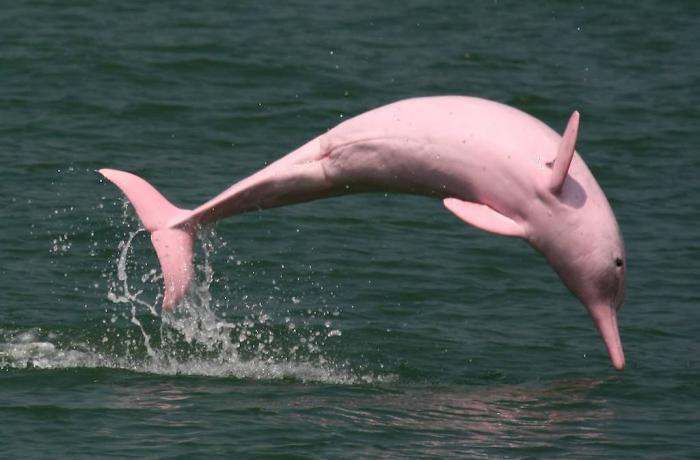
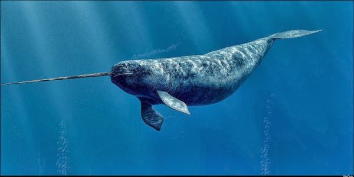
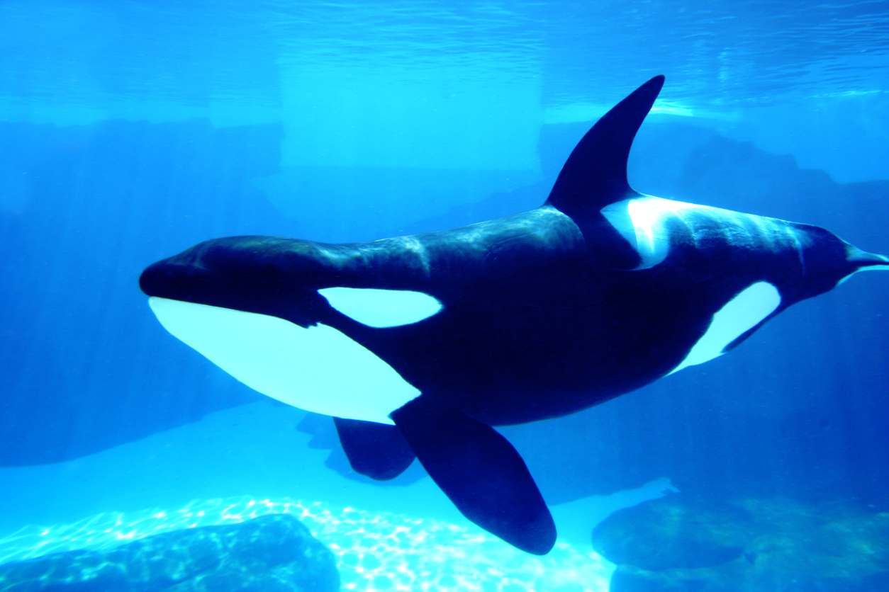
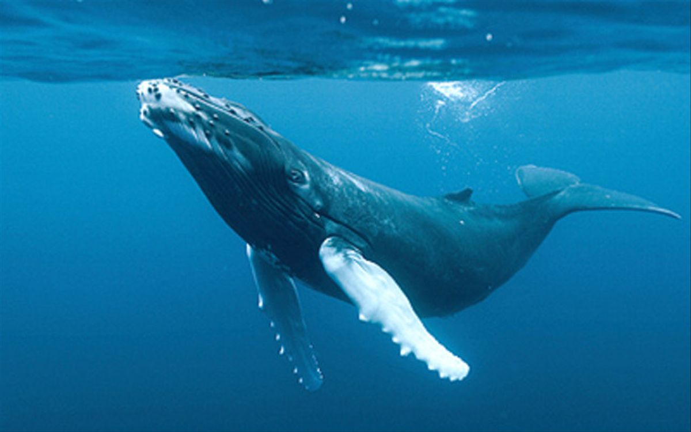
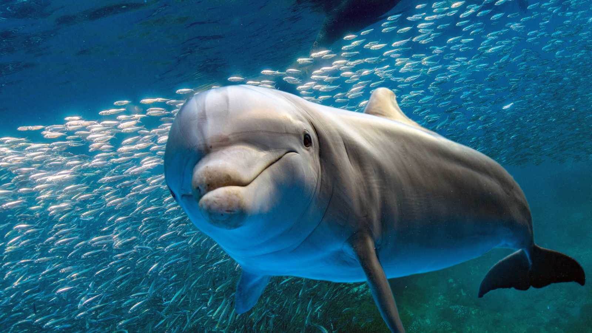

Platanistoidea
Distribución geográfica
El delfín del río Amazonas, también conocido como delfín rosado o boto, vive en agua dulce en las cuencas de los ríos Amazonas y Orinoco en Bolivia, Brasil, Colombia, Ecuador, Guyana, Perú y Venezuela. Es un cetáceo de agua dulce, relativamente abundante con una población estimada en decenas de miles. Sin embargo, está clasificado como vulnerable en ciertas áreas debido a represas que fragmentan y amenazan a ciertas poblaciones, y de otras amenazas como la contaminación de ríos y lagos.
biología
Los platanistoideos (Platanistoidea), conocidos vulgarmente como delfines de río (a diferencia de los delfínidos o delfines oceánicos), son una superfamilia de cetáceos odontocetos que tienen su hábitat en estuarios y cursos fluviales. Esta superfamilia se compone de dos familias.
Todos los platanistoideos presentan largos y finos hocicos. Su vista es muy limitada (en algunas especies, inexistentes), por lo que el sentido de la ecolocalización les resulta indispensable a la hora de alimentarse y nadar. Su aleta dorsal es poco desarrollada. Tal vez una de las características más llamativas es, al igual que en la familia Monodontidae, la capacidad de mover el cuello, a diferencia de los delfines oceánicos, que poseen las vértebras cervicales fusionadas.
Los delfines de río son miembros del infraorden Cetacea, los cuales son descendientes de mamíferos terrestres del orden de los artiodáctilos (artiodáctilos ungulados). Están relacionados con Indohyus, un género extinto de mamíferos artiodáctilos, a partir del cual se separaron hace aproximadamente 48 millones de años.2 Los primeros cetáceos primitivos, o arqueocetos, entraron al mar hace aproximadamente 49 millones de años y se volvieron totalmente acuáticos de 5 a 10 millones de años más tarde. No se tiene certeza sobre cuando los primeros delfines de río se aventuraron de nuevo al agua dulce.3Se cree que tienen distribuciones relictos, es decir, sus antepasados originalmente ocuparon los hábitats marinos, pero luego fueron desplazados de estos hábitats por modernos linajes de delfines.45 Muchas de las similitudes morfológicas y adaptaciones al hábitat de agua dulce surgieron debido a la evolución convergente; por lo tanto, una agrupación de todos los delfines de río es parafilético. Los delfines de río Amazonas en realidad están más estrechamente relacionados con delfines oceánicos que con los delfines de río asiáticos del sur.678 Isthminia panamensis es un género extinto de delfines de río, que vivió hace 5,8 a 6,1 millones de años. Sus fósiles fueron descubiertos cerca de Piña, Panamá.
|  |
 |
|
|
 |
 |